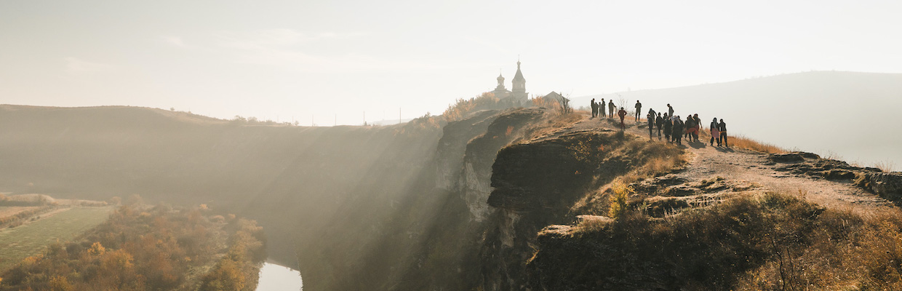
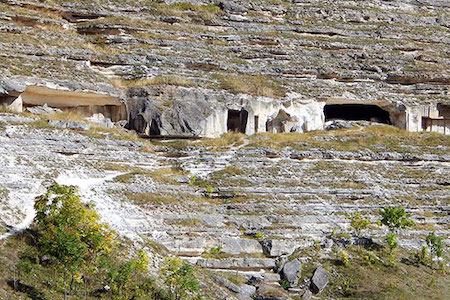
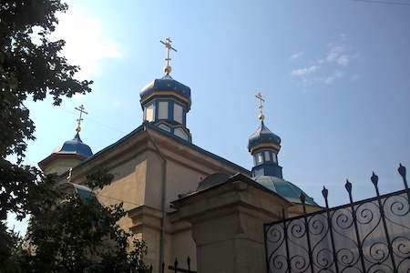
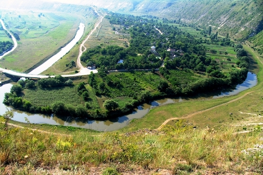
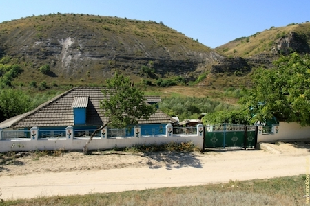
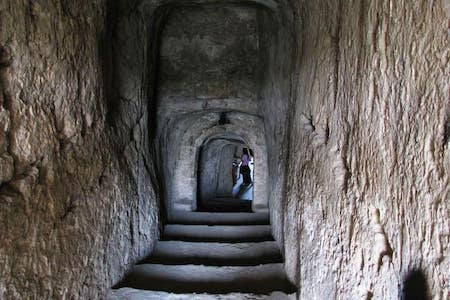
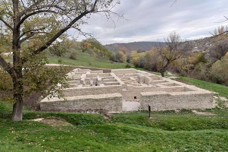
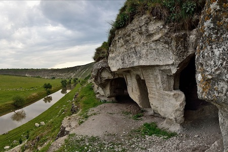
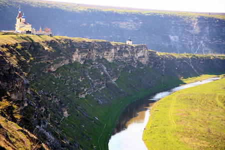
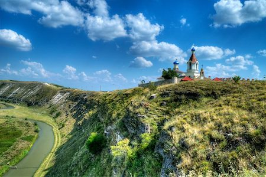

Orheiul Vechi

Orheiul Vechi este una dintre cele mai impresionante destinaţii turistice din Republica Moldova, un loc unde natura spectaculoasă şi istoria bogată se îmbină armonios. Peisajul este dominat de stânci calcaroase şi de cursul şerpuit al râului Răut, oferind privelişti deosebite la fiecare pas. Zona păstrează urmele mai multor civilizaţii, iar vestigiile istorice pot fi descoperite în întreg complexul.Un element definitoriu al locului îl reprezintă mănăstirile rupestre săpate în stâncă, care impresionează prin simplitate şi spiritualitate. Atmosfera este liniştitoare, ideală pentru relaxare, plimbări şi momente de contemplare. În apropiere, satele tradiţionale completează experienţa prin autenticitate, ospitalitate şi gastronomie locală.
Explorează locaţiile din Orheiul Vechi
Mănăstirea rupestră Butuceni

Săpată direct în stâncă, această mănăstire reprezintă una dintre cele mai fascinante atracţii din Orheiul Vechi, îmbinând perfect spiritualitatea cu natura. Locaşul impresionează prin simplitatea sa, dar şi prin energia liniştitoare care se simte încă de la intrare. Vizitatorii pot explora încăperile înguste şi coridoarele sculptate manual, descoperind un mod de viaţă profund şi retras. Poziţionată la înălţime, mănăstirea oferă o panoramă spectaculoasă asupra văii râului Răut, care pare să curgă liniştit prin peisaj. Atmosfera este una aparte, ideală pentru reflecţie şi relaxare. Este un loc unde trecutul şi prezentul coexistă armonios. Fiecare colţ spune o poveste despre credinţă şi perseverenţă. Vizita aici devine nu doar o experienţă turistică, ci şi una spirituală. Peisajele din jur completează perfect farmecul locului. Este, fără îndoială, un punct de neratat pentru orice vizitator.
Biserica Adormirea Maicii Domnului

Aşezată pe un deal pitoresc, această biserică oferă una dintre cele mai impresionante privelişti din întreaga regiune. Construcţia sa simplă, dar elegantă, reflectă stilul tradiţional şi istoria bogată a locului. Atmosfera liniştită o transformă într-un refugiu perfect pentru cei care caută pace şi echilibru. De aici, vizitatorii pot admira întreaga vale şi serpentinele râului Răut, într-un cadru natural deosebit. Lumina apusului creează un spectacol vizual memorabil. Este un loc ideal pentru fotografie, dar şi pentru momente de contemplare. Fiecare vizită oferă o experienţă diferită, în funcţie de anotimp. Farmecul autentic al bisericii atrage turişti din toate colţurile. Este un simbol al tradiţiei şi spiritualităţii locale. Un loc unde liniştea devine parte din experienţă.
Râul Răut

Râul Răut este elementul central care defineşte peisajul spectaculos din această zonă. Cursul său şerpuit creează forme naturale unice, transformând fiecare colţ într-un cadru perfect pentru explorare. Apa curge liniştit, reflectând cerul şi stâncile din jur. Este un loc ideal pentru plimbări relaxante şi momente de deconectare totală. Sunetul apei contribuie la o atmosferă calmă şi reconfortantă. Pe malurile râului se pot observa diverse forme de relief interesante. Este o destinaţie potrivită pentru iubitorii de natură şi fotografie. Fiecare anotimp aduce o nouă perspectivă asupra peisajului. Zona este perfectă pentru a evada din rutina zilnică. Râul oferă o experienţă autentică şi liniştitoare.
Satul Butuceni

Butuceni este un sat tradiţional unde autenticitatea se simte la fiecare pas. Casele vechi, construite în stil specific moldovenesc, păstrează farmecul vremurilor de altădată. Atmosfera este caldă şi primitoare, datorită ospitalităţii localnicilor. Vizitatorii pot descoperi aici obiceiuri şi tradiţii păstrate cu grijă. Gastronomia locală este un alt punct forte, oferind preparate delicioase şi autentice. Străduţele liniştite invită la plimbări relaxante. Peisajele din jur completează perfect experienţa rurală. Este locul ideal pentru a înţelege stilul de viaţă tradiţional. Fiecare vizită devine o lecţie de cultură şi istorie. Butuceni oferă o experienţă autentică şi memorabilă.
Peşterile monahale

Peşterile monahale reprezintă o mărturie impresionantă a vieţii spirituale din trecut. Săpate în stâncă, acestea oferă o perspectivă unică asupra modului de trai al călugărilor. Spaţiile înguste şi întunecoase creează o atmosferă misterioasă. Vizitatorii pot simţi liniştea profundă care domina acest loc. Fiecare încăpere spune o poveste despre izolare şi credinţă. Este o experienţă diferită faţă de alte atracţii turistice. Locul impresionează prin simplitate şi autenticitate. Este ideal pentru cei pasionaţi de istorie şi spiritualitate. Atmosfera este una aproape mistică. Vizita devine o călătorie în timp.
Băile tătăreşti

Ruinele băilor tătăreşti adaugă un element istoric fascinant în peisajul natural. Aceste vestigii reflectă influenţele culturale din perioada medievală. Deşi timpul şi-a pus amprenta, structura păstrează un farmec aparte. Vizitatorii pot explora rămăşiţele şi pot descoperi detalii interesante despre trecut. Este un loc care stârneşte curiozitatea şi imaginaţia. Istoria prinde viaţă prin aceste ruine. Atmosfera este una liniştită, dar plină de semnificaţie. Este o destinaţie potrivită pentru exploratori. Peisajul din jur completează experienţa. Un loc unde trecutul devine prezent.
Promontoriul Peştere

Acest promontoriu oferă unele dintre cele mai spectaculoase privelişti din întreaga zonă. De aici, valea râului Răut se dezvăluie în toată frumuseţea sa. Este un loc ideal pentru fotografii impresionante. Spaţiul deschis creează o senzaţie de libertate şi linişte. Vizitatorii pot petrece timp admirând peisajul. Atmosfera este calmă şi relaxantă. Fiecare moment petrecut aici devine memorabil. Este o destinaţie perfectă pentru iubitorii de natură. Priveliştile sunt diferite în funcţie de anotimp. Un loc care impresionează de fiecare dată.
Promontoriul Butuceni

Promontoriul Butuceni este un alt punct de belvedere spectaculos, perfect pentru panorame largi. De aici, întreg peisajul pare desprins dintr-o poveste. Vizitatorii pot admira serpentinele râului şi satele din jur. Este un loc ideal pentru relaxare şi contemplare. Atmosfera este liniştită şi inspirantă. Este perfect pentru fotografii deosebite. Fiecare vizită oferă o nouă perspectivă. Natura domină întregul peisaj. Este un loc unde te poţi reconecta cu liniştea. O experienţă vizuală impresionantă.
Complexul muzeal Orheiul Vechi

Acest complex reprezintă o adevărată comoară culturală şi istorică a Moldovei. Considerat un muzeu în aer liber, locul îmbină vestigiile arheologice cu peisajele naturale spectaculoase. Vizitatorii pot descoperi urme ale diferitelor civilizaţii care au locuit aici de-a lungul timpului. Fiecare zonă are propria poveste şi farmec. Este o destinaţie ideală pentru iubitorii de istorie. Experienţa este una interactivă şi educativă. Natura şi cultura se îmbină perfect. Este locul unde trecutul prinde viaţă. Fiecare vizită devine o călătorie în timp. Un punct esenţial pe harta turistică a Moldovei.